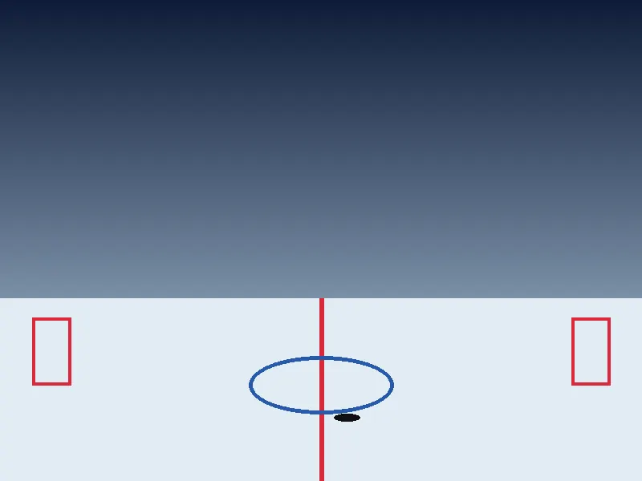
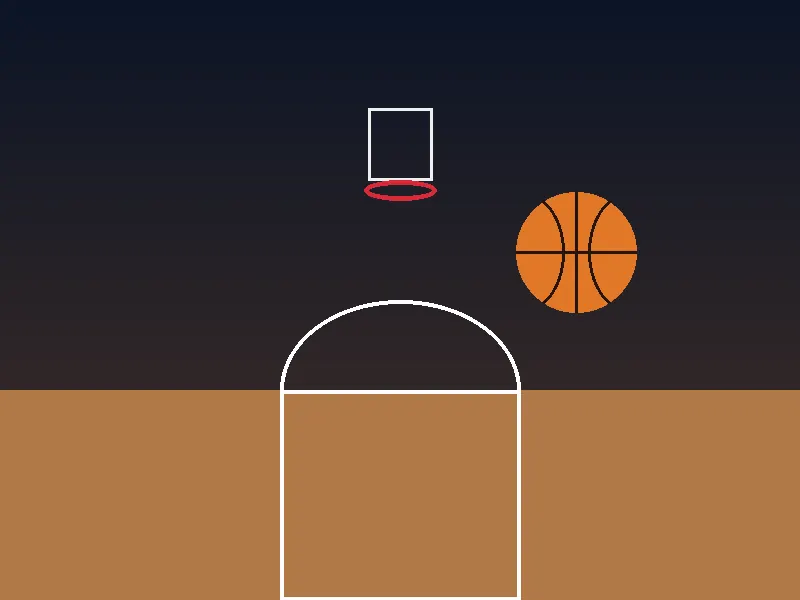
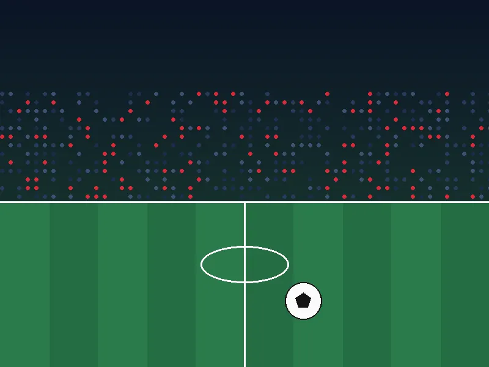
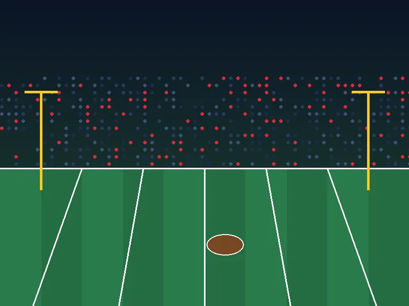
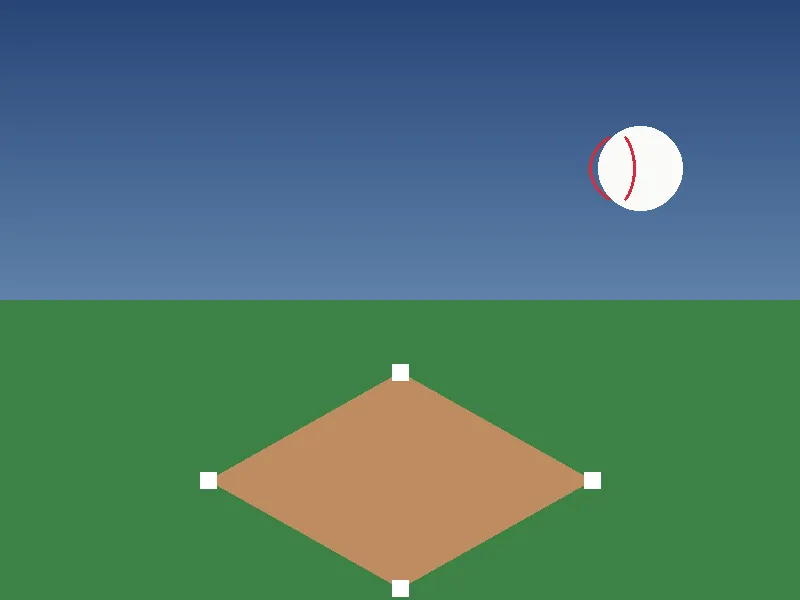
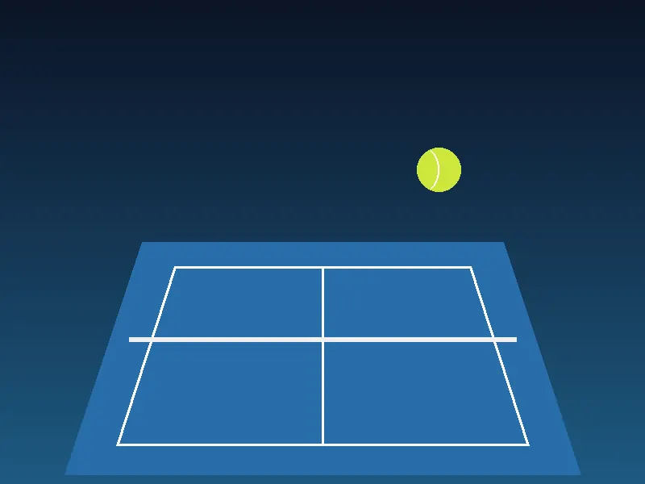

Hockey
How the Power Play Works: A Fan's Guide
A clear walkthrough of penalties, man advantages and the formations teams use to take advantage of them.
Read MoreExplore Canadian hockey, basketball, football, soccer and more with accessible sports guides, event information and thoughtful analysis.
Independent information site. No betting, wagering or ticket sales.

Six sports, each with context for Canadian fans, rules, competitions and terminology.

From rinks in small towns to NHL arenas, the sport at the centre of Canadian winters.
Explore
Invented by a Canadian, now a growing game from school gyms to professional arenas.
Explore
The world's game, with a fast-growing domestic scene in cities across Canada.
Explore
Three downs, a wider field and the Grey Cup: a distinctly Canadian game.
Explore
Summer diamonds, community leagues and a national following.
Explore
Grand Slam drama and a proud tradition of Canadian tournaments and players.
ExploreOriginal sample editorial pieces that explain how Canadian sports work. They are illustrative guides, not breaking news.
A clear walkthrough of penalties, man advantages and the formations teams use to take advantage of them.
Read MoreThe most common action in modern basketball, broken into the choices each player makes.
Read MoreA side-by-side look at the field, the downs and the rules that shape Canadian football.
Read MoreThe three ideas new fans ask about most, explained in plain language.
Read MoreHow a Canadian-born educator created a game that now has professional leagues around the world.
Read MoreWhere professional, semi-professional and community soccer fit together in Canada.
Read MoreThe fixtures below are fictional demonstrations of how event information is presented. They are not real events and show no scores.
Guides written with Canadian leagues, venues and time zones in mind.
Event details laid out plainly, with the time zone and status always shown.
Rules, formats and terminology explained for newcomers and long-time fans.
No team or league sponsors our editorial choices. Read our editorial policy.
Browse Canadian sports guides, explainers and event information, all in one place.
Explore Latest Insights